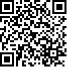
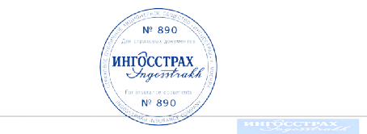

ЭЛЕКТРОННЫЙ СТРАХОВОЙ ПОЛИС
серия ХХХ № 009786274
ОБЯЗАТЕЛЬНОГО СТРАХОВАНИЯ ГРАЖДАНСКОЙ ОТВЕТСТВЕННОСТИ ВЛАДЕЛЬЦЕВ ТРАНСПОРТНЫХ СРЕДСТВ
Страховая премия
3557 руб. 95 коп.

СПАО «Ингосстрах»
ИНН: 7705042179, р/с 40701810200010000027 в БАНК
СОЮЗ (АО), г. МОСКВА, БИК: 044525148, Корр.
счет: 30101810845250000148,127055, г. Москва, ул.
Пятницкая д 12 стр2, e- mail: ingos@ingos.ru,
Круглосуточный Контакт-центр: +7 (495) 956-55-55
(Москва), 8-800-100-77-55 (другие города России)
Срок страхования
с 00 ч. 00 мин.
по 24 ч. 00 мин.
03.10.2019 г.
02.10.2020 г.
Страхование распространяется на страховые случаи, произошедшие в период использования транспортного
средства в течение срока страхования
с 03.10.2019 г. по 02.10.2020 г., с . .20 г. по . .20 г.,
с . .20 г. по . .20 г.
1. Страхователь
(полное наименование юридического лица или фамилия, имя, отчество2 гражданина)
Притчин Андрей Рудиевич, 394019, г. Воронеж, ул. Семилукская д.20 кв.9
Собственник транспортного средства (полное наименование юридического лица или фамилия, имя, отчество2 гражданина)
Притчин Андрей Рудиевич, 394019, г. Воронеж, ул. Семилукская д.20 кв.9
2. Транспортное средство используется с прицепом: [] да, [X] нет
Марка, модель транспортного
средства
Chevrolet
Lacetti 1.6
Идентификационный номер транспортного средства
| X |
U |
U |
N |
F |
3 |
5 |
6 |
J |
C |
0 |
0 |
2 |
7 |
8 |
7 |
2 |
Государственный регистрационный знак транспортного средства O076УO36RUS
Паспорт транспортного средства, свидетельство о регистрации транспортного средства, паспорт
самоходной машины (либо аналогичный документ)
Вид документа СВИДЕТЕЛЬСТВО О РЕГИСТРАЦИИ серия 3602 номер 145917
Цель использования транспортного средства (отметить нужное): [X] личная, [] учебная езда, [] такси, []
перевозка опасных и легковоспламеняющихся грузов,
[] прокат/краткосрочная аренда, [] регулярные пассажирские перевозки/перевозки пассажиров по заказам, []
дорожные и специальные транспортные средства,
[] экстренные и коммунальные службы, [] прочее.
3. Договор заключен в отношении:
неограниченного количества лиц, допущенных к управлению транспортным средством [ ]
лиц, допущенных к управлению транспортным средством [V]
|
№
п/п
|
Лица, допущенные к управлению транспортным средством (фамилия, имя,
отчество2)
|
Водительское удостоверение (серия, номер) |
КБМ на начало годового срока страхования |
| 1 |
Притчин Андрей Рудиевич |
3623 804942 |
0.5 |
|
*************************************************************************** |
**** |
** |
|
*************************************************************************** |
**** |
** |
|
*************************************************************************** |
**** |
** |
4. Страховая сумма, в пределах которой страховщик при наступлении каждого страхового случая (независимо
от
количества страховых случаев в течение срока страхования по договору обязательного страхования)
обязуется
возместить потерпевшим причиненный вред, установлена Федеральным законом от 25 апреля 2002 года № 40-ФЗ
«Об
обязательном страховании гражданской ответственности владельцев транспортных средств» в редакции,
действующей на дату заключения (изменения, при условии, что такие изменения потребовали доплаты
страховой
премии) настоящего договора.
5.Страховой случай – наступление гражданской ответственности владельца транспортного средства за
причинение
вреда жизни, здоровью или имуществу потерпевших при использовании транспортного средства, влекущее за
собой в
соответствии с договором обязательного страхования обязанность страховщика осуществить страховую
выплату.
6. Страховой полис действует на территории Российской Федерации.
7. Расчет размера страховой премии
| Базовая ставка |
Коэффициент |
Итого |
| ТБ |
КТ |
КБМ |
КВС |
КО |
КС |
КП |
КМ |
КПР |
КН |
|
| 4118 |
1.5 |
0.5 |
.96 |
1 |
1 |
1 |
1.2 |
1 |
1 |
3 557,95 |
8. Особые отметки Договор составлен в виде электронного документа через официальный сайт СПАО
«Ингосстрах»
www.ingos.ru
Договор № CL116652551
Дата заключения договора «02» октября 2019 г.
Страхователю выданы перечень представителей страховщика в субъектах Российской Федерации согласно
приложению и два бланка извещения о дорожно-транспортном происшествии.
Страхователь:
Притчин Андрей Рудиевич
Подписано с использованием электронной подписи на сайте
www.ingos.ru,
11:46 02.10.2019
Страховщик/представитель страховщика:
Морозов Денис Владимирович
Подписано Директором департамента продаж Дирекции розничного бизнеса СПАО
«Ингосстрах» Морозовым Денисом Владимировичем, действующим на основании доверенности
№ 77/181-н/77-2018-2-1102 от 14.05.2018г
«02» октября 2019 г.
(дата выдачи полиса)

ПРИМЕЧАНИЯ
1. В пунктах 1 и 3 настоящего страхового полиса класс на начало годового срока страхования указывается в
соответствии с
Указанием Банка России от 19 сентября 2014 года N 3384-У "О предельных размерах базовых ставок страховых
тарифов и
коэффициентах страховых тарифов, требованиях к структуре страховых тарифов, а также порядке их применения
страховщиками при определении страховой премии по обязательному страхованию гражданской ответственности
владельцев
транспортных средств", зарегистрированным Министерством юстиции Российской Федерации 30 сентября 2014 года N
34187,
24 марта 2015 года N 36541 ("Вестник Банка России" от 2 октября 2014 года N 88, от 30 марта 2015 года N 27)
(далее -
Указание N 3384-У).
2. В пункте 7 настоящего страхового полиса расчет страховой премии по договору обязательного страхования
указывается
путем отражения числовых значений переменных в соответствии с формулами, приведенными в Указании 3384-У.
1 Штриховой код должен содержать сведения для прямого доступа к сведениям о договоре
обязательного страхования
на официальном сайте профессионального объединения страховщиков в сети «Интернет».
2 Отчество указывается при наличии
3 При ограниченном использовании транспортного средства в незаполненных полях таблицы ставятся прочерки.